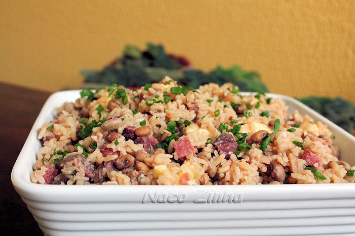
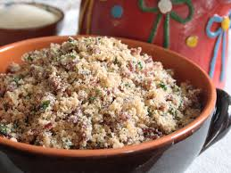
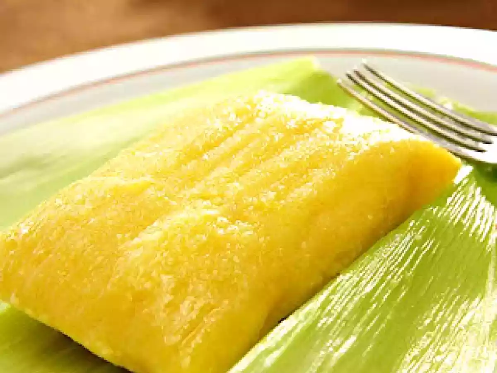

receitas mais populares da vovo
Maria Isabel
.jpg)
Ingredientes
500 g de carne de sol
3 xícaras de arroz
1 cebola grande picada
4 dentes de alho
Cheiro-verde
Pimenta-de-cheiro
Banha ou manteiga de garrafa
Sal
Preparo
Dessalgue a carne de sol e corte em cubos pequenos.
Frite na banha até dourar bem.
Acrescente cebola, alho e pimenta.
Adicione o arroz cru e misture na gordura da carne.
Coloque água quente até cobrir.
Baião de Dois

Ingredientes
2 xícaras de arroz
1 xícara de feijão verde
Queijo coalho
Carne seca
Cebola
Modo de preparo
Cozinhe o feijão.
Frite a carne seca.
Refogue cebola.
Junte arroz e feijão.
Acrescente queijo coalho.
Misture até derreter levemente.
Paçoca de Carne de Sol

Ingredientes
500 g de carne de sol torrada
2 xícaras de farinha de mandioca
1 cebola
Manteiga de garrafa
Preparo
Torre a carne até ficar seca.
Bata no pilão ou processador.
Refogue cebola na manteiga.
Misture carne triturada e farinha.
Mexa até ficar bem soltinha.
Mugunzá Salgado
.jpg)
Ingredientes
Milho para mugunzá
Carne seca
Linguiça
Temperos
Modo de preparo
Deixe o milho de molho.
Cozinhe até amolecer.
Frite carnes e temperos.
Misture tudo.
Cozinhe mais alguns minutos.
Doce de Buriti
.jpg)
Ingredientes
Polpa de buriti
Açúcar
Água
Modo de preparo
Misture os ingredientes.
Leve ao fogo baixo.
Mexa até engrossar.
Deixe esfriar antes de servir.
Pamonha Doce

Ingredientes
6 espigas de milho verde
1 xícara de açúcar
1 xícara de leite
2 colheres de manteiga
1 pitada de sal
Palhas do milho para embrulhar
Modo de preparo
Retire as palhas e reserve as maiores.
Rale ou bata os grãos do milho no liquidificador.
Coe a massa, se quiser uma textura mais lisa.
Misture açúcar, leite, manteiga e sal.
Faça saquinhos com as palhas.
Coloque a massa dentro das palhas e amarre
Cozinhe em água fervente por cerca de 40 a 50 minutos.
Retire e deixe esfriar um pouco.
Sirva morna ou fria.